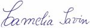

Ganduri din Tabere cu Suflet
Ganduri din Tabere cu Suflet
"Imi place sa fiu atenta la fiecare detaliu cand este vorba de copii. Suntem si noi parinti si stiu cat de importante sunt dragostea si atentia."
"Pentru a atinge performanta, copiii au nevoie de intreceri organizate. Competiile sunt un instrument util pentru motivare, fara de care dezvoltarea lor nu poate fi desavarsita."
"Voluntariatul este o indeletnicire nobila, ce atinge o nota net superioara nevoilor bazale ale omului"
"Un prieten adevarat este acela care se bucura cand vede ca ti-ai implinit un vis, mergand in niste locuri minunate, căci stie ca ti-ai construit niste amintiri superbe pe care poti sa i le impartasesti."
"Din pacate, am ajutat oameni care ne-au raspuns la bine cu rau"

Despre Compasiune:
"Orice ai pierde, nu este decat un lucru de care cineva are mai multa nevoie decat tine "
"Menirea noastra este sa ii ajutam pe ceilalti"
"Datoria fiecaruia este sa isi gaseasca rostul in viata. Norocosi toti cei care reusesc acest lucru "
Despre Competitii si competitivitate:
"Marii campioni nu sunt cei cu vitrina plina de Trofee, ci aceia care stiu sa piarda"
"Orice competitie poate fi castigata cu 3 conditii: antrenament, pregatirea mentala si atentie la detalii"
"Competitiile sportive au trei Piloni: Competitivitatea, atingerea Perfectiunii si partea Ludica. De prea multe ori o neglijam pe ultima."
Despre Educatie:
"Suntem asa cum vedem lumea din jur"
"Profesorii buni sunt cei care au darul sa aprinda o scanteie magica!
Din acel moment, procesul educativ este un nesecat izvor de bucurii"
"Menirea unui educator este sa ajute copiii sa stea pe propriile picioare"

"Fie ca este vorba de procese educative bazate pe imitare,
sau de procese mai complexe, de training si instruire pentru adulti,
cheia pentru un proiect de succes consta in Incredere si Onestitate."